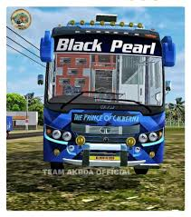

Tata Prakash Zedone non body code

This is one of my favourite 3d model which I have done in my life I gave my soul and sweat into this beauty.This is fully detailed 3d model with the actual scalling.It took me 5 months to complete this 3d model and is around 100 mb in size. If you are someone looking for something like this now you know where to reach out 😄